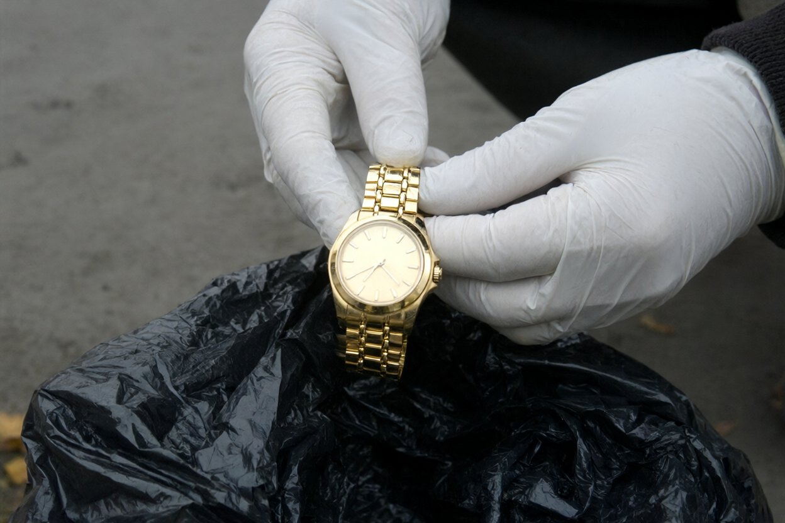

ПП «Сова-Детектив» · справа № 117/07Рябоконь К. · ср 31.10.2007
Звіт зовнішнього спостереження
Об'єкт: Мороз Анжеліка (Клочківська, 23, кв. 41; за дорученням Шульги В.І.). Час — за наручним годинником. Оперативник: Рябоконь К.
09:00 — заступив на пост, двір Клочківської, 23 («Ланос» біля трансформаторної, видно 2-й під'їзд і контейнери).
10:20 — об'єкт вийшла з 2-го під'їзду по хліб («АТБ»). 10:35 — повернулась. Більше не виходила.
13:50 — у 2-й під'їзд зайшов чоловік, ≈ 30 років, дуже високий, бритий, шкіряна куртка. Як з'ясувалось, Дзюба Роман, колишній об'єкта.
14:05 — вийшов з пакетом, кинув у контейнер № 2, поїхав на маршрутці.
14:20 — перевірив контейнер: зверху чорний поліетиленовий пакет, у ньому серветки, недопалки і чоловічий годинник «Longines» жовтого металу; іде, час точний. Працював у рукавичках, сфотографував на місці (фото 1).
Дзюбу встановив через знайомих у «Олімпі» (фітнес, Сумська, 49; там він тренер).
17:00 — годинник передав Ярошенку О.М., Чугуївський РВ. Дзвонив шефу.
20:00 — пост знято (об'єкт у квартирі, світло, вікна зашторені).

Фото 1. 31.10, 14:20, двір Клочківської, 23. Годинник на пакеті (пакет не розривав)
Висновок: годинник у пакеті, який виніс Дзюба. Передано міліції.